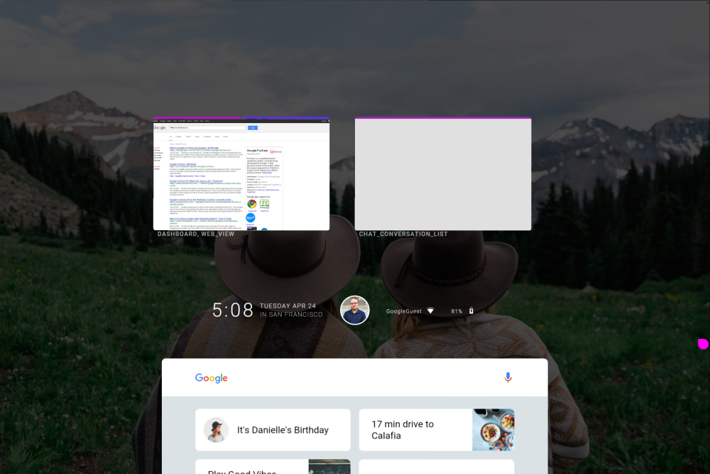

Fuchsia History
In August of 2016, news sites reported that Google was creating a new operating system due to some commits found in a Google GIT repository.
In May of 2017, news site ARS Technica wrote about Fuchsia's new UI called Armadillo. Along with a developer writing that Fuchsia "isn't a toy thing, it's not a 20% Project, it's not a dumping ground of a dead thing that we don't care about anymore"
The previous UI for Google fuchsia called Armadillo. Credit: 9To5Google.com
In January 2018, Google published a guide on how to run Fuchsia on the Google Pixelbook. News site ARS Technica followed the instructions correctly.
In January 2019, Google added a "Fuchsia" device to the android ecosystem via the Android Open Source Project (AOSP). Google also talked about Fuchsia at their yearly Google I/O event. Hiroshi Lockheimer described Fuchsia as one of Googles experiments around new concepts for operating systems.
In July 2019, Google annouced Fuchsia's official website of the project, providing a well written documentation and more open source code. Around a year later Google in December 2020, Google announced they were "expanding Fuchsia's open source mode. This included making mailing lists open to the public, introducing a governance model, publishing their roadmap and would be using a public issue tracker.
In May 2021, Google confirmed that it had deployed Fuchsia in the consumer market for the first time. It came in an update to the first gen Google Home Hub and replaces the existing Google Cast Platform. There are no user interface changes, only the operating system has changed.